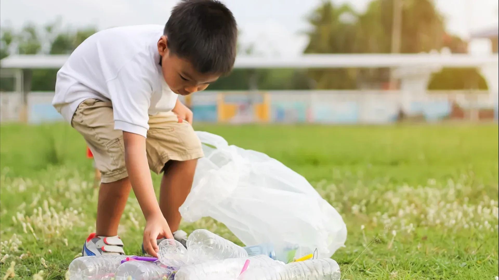

Swachh Bharat: A Clean India Mission

The Swachh Bharat Mission, launched in 2014 by the Indian government under Prime Minister Narendra Modi, is a nationwide campaign aimed at achieving a cleaner and more hygienic India. Its primary objectives include eliminating open defecation, enhancing solid waste management practices, and promoting cleanliness and sanitation across urban and rural areas alike. The mission emphasizes the construction of millions of household and community toilets to ensure access to safe sanitation facilities for all citizens, particularly in rural regions where such infrastructure was lacking.
Beyond infrastructure development, the Swachh Bharat Mission places significant emphasis on behavior change through awareness campaigns and community engagement. It seeks to instill a sense of responsibility and pride in maintaining cleanliness among individuals and communities, thereby fostering a sustainable culture of hygiene. The mission's holistic approach not only addresses immediate sanitation challenges but also aims to improve public health outcomes, enhance environmental sustainability, and contribute to the overall well-being and dignity of all Indians.